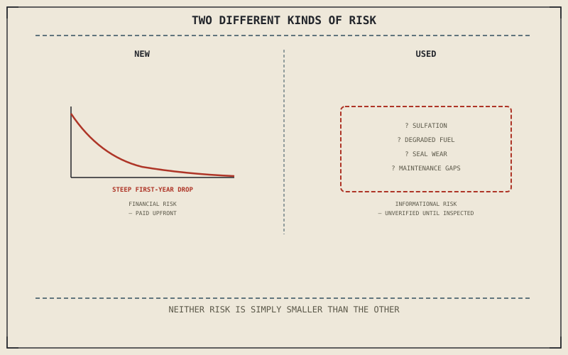

Chapter 15.3 covered insurance, maintenance, and depreciation as costs shared by a new and a used motorcycle alike, once owned. Before ownership even begins, new and used carry two genuinely different kinds of risk — one mostly financial, the other mostly informational — and neither one is simply "safer" than the other in every respect.
Chapter 15.3 closed by pointing here: a related but distinct decision, new versus used. This chapter is that decision.
New: Paying for Certainty
A new motorcycle eliminates unknown maintenance history and hidden wear entirely — there is no history to unknow, and Chapter 13.7's warranty coverage backs that certainty directly from day one. What a new purchase pays for, beyond the machine itself, is the steepest part of Chapter 15.3's depreciation curve, which happens overwhelmingly in the first year or two of ownership regardless of how well the bike is actually cared for afterward.
Used: Paying Less for Unknown History
A used motorcycle trades that certainty for a lower price, but the difference is compensated by genuine informational risk rather than eliminated. Chapter 10.9 already described the specific ways a motorcycle degrades from disuse — sulfation, degraded fuel, suspension seals sitting under constant load — and none of that history is visible on a spec sheet or an odometer reading alone. A used motorcycle's actual condition depends entirely on how honestly its maintenance history can be verified, which Chapter 11.1's diagnostic discipline applies to just as directly as it applies to any other unconfirmed cause.
New and used aren't simply expensive-and-safe versus cheap-and-risky — they're two genuinely different kinds of risk, financial depreciation on one side and unverified mechanical history on the other, and a lower price on the used side is compensation for that second risk, not a discount with no trade-off attached.

A diagram contrasting a new motorcycle's steep first-year depreciation against a used motorcycle's unverified maintenance and disuse history, shown as two genuinely different kinds of risk rather than one being simply safer than the other.
Certified Pre-Owned as a Middle Path
A manufacturer or dealer certified pre-owned program attempts to split the difference directly: an inspection process and extended warranty coverage meant to substitute for the unverified history Chapter 10.9's disuse-degradation risks represent, priced closer to a used motorcycle's discount than a new one's full depreciation hit. It's a genuine third option, not simply used with better marketing, though the specific inspection standard behind the certification is worth verifying rather than assumed.
A Common Misconception, Cleared Up Early
It's a common assumption that new is simply the safer choice and used is simply the cheaper one, collapsing two genuinely different risk types onto a single price axis. New pays a real, steep depreciation cost for eliminated informational risk; used accepts real informational risk for a lower price and a shallower depreciation curve going forward. Neither framing is objectively correct — the right choice depends on how much a specific buyer can tolerate each kind of risk, not which option is generically better.
Where This Leads
Chapter 15.5 turns directly to the tool that reduces a used motorcycle's informational risk: inspecting one properly before buying it.
Key Concepts to Remember
- A new motorcycle pays the steepest part of its depreciation upfront in exchange for eliminating unknown maintenance history entirely.
- A used motorcycle's lower price compensates for genuine, unverified informational risk about its actual maintenance and disuse history.
- Certified pre-owned is a genuine third option, splitting the difference between the two risk types rather than being simply used with better marketing.
Cross-References
| ← Ch. 10.9 | Established specific disuse-driven degradation; this chapter treats that same degradation as the unverified informational risk a used purchase accepts. |
| ← Ch. 13.7 | Covered warranty coverage in the context of modifications; this chapter treats that same coverage as backing a new purchase's certainty from day one. |
| ← Ch. 11.1 | Established confirming a cause before trusting it; this chapter applies that same discipline to verifying a used motorcycle's actual maintenance history. |
| → Ch. 15.5 | Covers inspecting a used motorcycle properly. |